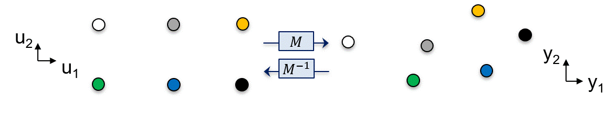
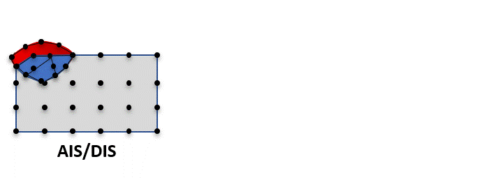
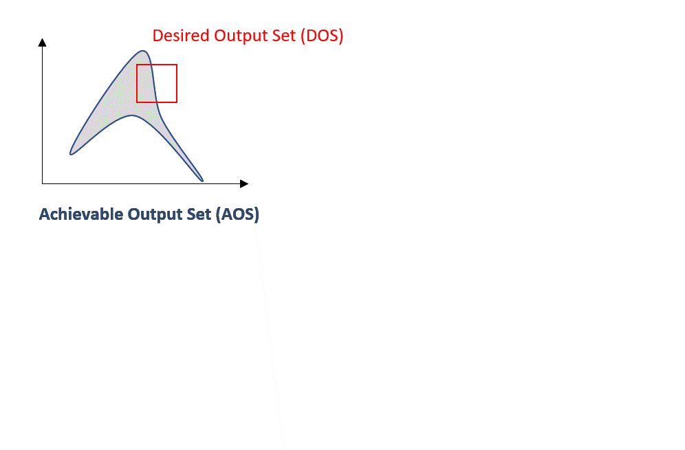

Process Operability Algorithms#
There are two main operations that may be needed to perform an operability analysis:
Operability sets quantification: Obtaining and quantifying the AIS, AOS, DOS, DIS, EDS, and so on. This yields insights into the achievability of a given process objectives. If the analysis is in low dimensions (\(\leq3\)), it can be performed visually. In higher dimensions, the OI still serves as a valuable metric to assess the operability of a process. Irrespective of dimensionality, computational geometry algorithms and polytopic calculations are necessary.
Inverse mapping: From a DOS, evaluate the corresponding DIS. For a general nonlinear process model, frequently represented in mathematical terms as a nonlinear system of equations as vector-valued functions, this may be a non-trivial task.
Algorithms have been developed in the literature to address these challenges. For quantification of the operability sets and thus, the OI itself, the multimodel approach has been developed. For inverse mapping, the nonlinear programming-based (NLP-based) and the implicit mapping approaches have been successfully employed to evaluate the inverse map of a given process model. Beyond finding feasible designs, the NLP-based approach also searches for the best one through process intensification (the problems P1, P2 and P3), and the multimodel representation supports a mixed-integer linear programming (MILP) framework that finds optimal modular designs quickly. This section will go briefly over these methods but the reader is encouraged to go over the Bibliography for a more thorough explanation of them.
Multimodel Approach#
The multimodel approach [13, 14, 15] employs the paradigm of a series of polytopes being able to represent any nonlinear space. This approach simplifies the calculation of operability sets since polytopes are by definition convex and can be described by their half-space representation (\(\mathcal{H}-rep\)) or vertex representation (\(\mathcal{V}-rep\)), as a system of linear inequality constraints.
Illustrative Example
Let’s consider the schematic below, in which each point corresponds to a coordinate in the input space, and their respective coordinate in the output space is obtained through the process model \(M\). Paired polytopes (color coded) can be “drawn” to represent the AOS accordingly:

Fig. 12 AIS-AOS representation using paired polytopes.#
In the animation above, \(P_1^u\) is paired with \(P_1^y\) and so on, in the general form \(P_k = \{P_k^u,P_k^y\}\)
Another example in which the non-convex AOS is approximated as a series of paired polytopes can be depicted in the animation below, in which one can see that the polytopes approximate the overall non-convex AOS region with relative accuracy, as well as the DOS and DIS:

Fig. 13 AIS-AOS polytopic approximation#
Due to its intrinsic roots in computational geometry and linear programming, the multimodel approach is a suitable process operability algorithm for:
Replacing non-convex regions with paired polytopes, allowing efficient OI computation and representation of the operability sets.
OI evaluation, allowing to rank competing design and control structures.
Nonlinear Programming-Based (NLP-based) Approach#
The NLP-based approach [6, 7] converts the inverse mapping task into a nonlinear programming formulation. The premise of this algorithm is that the DOS can be discretized into a series of coordinate points in the output space (AOS/DOS) and that an objective function of error minimization nature (e.g., Euclidean distance) is posed between the feasible operation and desired operation (DOS). The solution to the nonlinear programming problem at each discretized point is the DIS that attains the operation of the DOS. Mathematically, this base problem, referred to as P1, can be posed as the following NLP optimization problem:
for \(j=1:n\) output variables in the AOS/DOS, and \(k\) discretized points. Lastly, nonlinear constraints \(c\) might be imposed to the inverse map problem if needed; these can be a result of product specifications, equipment limitations and so on.
Illustrative Example
In the animation below, the optimization problem is posed for each discretized DOS point. Then, for each point, a corresponding feasible DIS solution is obtained. Due to the nature of the objective function (error/distance minimization), the DOS points will be shifted as close as possible to enable feasible operation represented by DOS* and DIS*:

Fig. 14 Inverse mapping using NLP-based approach#
The main features of the NLP-based approach are
Obtaining feasible operability sets, since the output points are shifted to be as close as possible to enable feasible operation.
Searching for new AIS unexplored regions, giving insights about process feasibility. This is particularly useful in finding new designs and/or material properties based on operability analysis.
Imposing constraints to the inverse mapping operation, allowing for searching for regions that might be limited to constraints related to market demands, product specifications and material limitations.
Since a successful solution of an NLP is always feasible, the DOS and DIS that achieve the error minimization between feasible and desired operation are named slightly differently as the Feasible Desired Output Set (DOS*) and Feasible Desired Input Set (DIS*).
P1, as posed above, asks only for feasibility: the design that comes closest to each desired operating point. Process operability often asks a sharper question, though: among all the feasible designs, which one is the best? Here “best” means smallest, cheapest or most compact, quantified by a process intensification metric \(\mathrm{PI}\) that the user supplies (for instance the reactor volume or the membrane area). Two further problems, P2 and P3, answer this question [6].
Process Intensification (P2)#
P2 builds directly on the result of P1. First, P1 is solved over the DOS grid to obtain the feasible region (DIS*/DOS*). Among those feasible designs, only the ones that meet a required level of performance are kept (for example, a benzene production of at least 20 mg/h); call this subset \(DIS_{\mathrm{PI}}\). The intensified design is then simply the member of that subset that minimizes the intensification metric:
Because P2 is a selection step applied after P1, the same feasible region can be ranked by any number of metrics (volume, area, cost) at almost no extra cost: P1 is solved once, and the ranking in P2 is repeated cheaply for each metric of interest.
Bilevel Formulation (P3)#
P3 states the same goal as a single, self-contained optimization problem instead of a two-step procedure. It is a bilevel program, that is, an optimization problem nested inside another one: an outer level chooses the design that minimizes the intensification metric, while an inner level guarantees that this design is itself a valid inverse-mapping (P1) solution:
The inner \(\arg\min\) is exactly P1, and the outer objective is the intensification metric of P2. Carrasco and Lima showed that solving this bilevel program yields the same design as solving P1 and P2 in sequence [6], so in practice P3 is solved through that equivalence: run the inner P1 over the grid, then minimize the metric over the feasible region. P2 and P3 therefore reach the same intensified design; the difference is one of framing, P2 as a postprocessing step on a previously computed region and P3 as a single optimization statement.
Implicit Mapping#
The NLP-based approach calls the process model many times inside an optimizer, once for every point of interest. When the model is written as a set of equations, a faster route is possible. Any process model can be cast implicitly as \(F(u, y) = 0\), a system of equations that the inputs \(u\) and outputs \(y\) must satisfy together. Implicit mapping [3] follows the solution of this system directly, instead of re-optimizing at every point.
The key idea is the implicit function theorem: if a point \((u, y)\) satisfies \(F(u, y) = 0\), then the derivatives of \(F\) tell us how \(y\) must change when \(u\) changes in order to stay on the solution. These derivatives are obtained exactly and cheaply with automatic differentiation. For a forward map the sensitivity is
and for the inverse map the roles of \(u\) and \(y\) are simply swapped. Starting from one known point on \(F = 0\), the mapping is then traced out as a path. A predictor step advances along the direction given by the expression above (a numerical integration, for example explicit Euler or Runge-Kutta), and a corrector step then solves \(F = 0\) at the new point to pull the path back onto the solution whenever the residual \(\lVert F \rVert\) grows beyond a tolerance. Sweeping this predictor-corrector march over the output space produces the inverse map (the DIS), and sweeping it over the input space produces the forward map (the AOS).
The main features of implicit mapping are
Speed on equation-oriented models, since tracing a single path of derivatives avoids solving a separate optimization problem at every point. The original study reports substantial reductions in computation time and complexity against the NLP-based approach on a CSTR and a membrane reactor [3].
Exact derivatives, supplied by automatic differentiation rather than finite differences, which keeps the traced path accurate.
Forward or inverse in one framework, since changing the direction of the map only swaps the roles of the inputs and outputs in the implicit function theorem.
MILP-Based Multilayer Framework#
The methods above solve one nonlinear program for every point of interest. The multilayer operability framework of Gazzaneo and Lima [13, 15] takes a different route: it reuses the paired polytopes of the multimodel approach (described above) so that the design search becomes a single mixed-integer linear program (MILP) instead of many nonlinear ones. Because every piece of the problem is linear, the design is found in a fraction of the time, the trade-off being that the nonlinear map is approximated by its polytopes.
The idea works in layers. The achievable region is first represented by the paired polytopes of the multimodel approach. Each polytope covers a small patch of the input space and maps to a small patch of the output space, and inside a polytope every point can be written as a weighted average of its corners (the weights are non-negative and sum to one). The MILP then makes two decisions at once:
Which polytope? A set of yes/no (binary) variables selects exactly one polytope, namely the one that both reaches the desired outputs and contains the best design.
Where inside it? A set of continuous weights pins down the exact design point as a weighted average of that polytope’s corners.
The objective is the same intensification metric \(\mathrm{PI}\) used in P2 and P3, but evaluated through the corner weights so that it stays linear. For one layer, the design problem reads:
where \(v_{i, k}\) are the corners of polytope \(k\), \(w_{i, k}\) their weights, and \(b_k\) the binary variable that switches polytope \(k\) on or off. The linking constraint \(\sum_i w_{i, k}=b_k\) forces the weights to live in the single selected polytope.
A single coarse grid would give only a rough design, so the framework refines itself: once the best polytope is found, the input region is shrunk around it, the polytopes are rebuilt on the smaller region, and the MILP is solved again. Repeating this zoom a handful of times drives the design to its optimal value, much as successively finer rulers locate a point more precisely.
The main features of the MILP-based framework are
Speed, since replacing many nonlinear programs by one linear program per layer finds optimal modular designs in seconds.
Optimality across the whole region, since the binary choice compares all candidate polytopes at once, rather than searching locally from an initial guess as the NLP does.
Reuse of the multimodel representation, since the same paired polytopes used to quantify the operability sets and the OI are what the MILP optimizes over, tying the two halves of an operability study together.
Dynamic Operability#
The algorithms above answer a steady-state question: can the desired outputs be reached at steady state by some choice of inputs? Dynamic operability asks the sharper, time-dependent question: starting from a given initial state, can the manipulated inputs drive the outputs into the desired region within a finite number of time steps, and regardless of the disturbances [10]? Where steady-state operability assesses the feasibility of a design, dynamic operability gauges the effectiveness of a control structure during operation; because it depends only on the input ranges and the model, it is an inherent property of the process and does not depend on a particular control law [10].
The process is described by a discrete-time state-space model, obtained by applying a zero-order hold to the continuous dynamics and discretizing time as \(t = \Delta t\, k\) [10]:
where \(x_k\) is the state, \(u_k\) the manipulated inputs (drawn from the AIS), \(d_k\) the disturbances (drawn from the EDS), and \(y_k\) the outputs. Unlike the steady-state case, the design variables are fixed once the unit is built, so only the operational inputs are manipulated over time [10].
Achievable Output Funnel#
The central object is the dynamic Achievable Output Set at step \(k\), \(AOS^k(x_0)\): the set of outputs reachable from the initial state \(x_0\) within \(k\) steps using input sequences that stay inside the AIS at every step [10]. For a fixed disturbance sequence \(d\),
in which \(\tilde{\mathcal{M}}\) is the dynamic input-output mapping, written with a tilde to distinguish it from the steady-state map \(\mathcal{M}\). Stacking these snapshots along the time axis, one slice per step, traces the characteristic operability funnel: it starts as the single point \(y(x_0)\) at \(k = 0\) and widens as the inputs move the process over time. When the disturbances are uncertain, the disturbance-robust funnel is the intersection of the reachable sets over the Expected Disturbance Set, so that a point is retained only if it is reachable regardless of which disturbance realization occurs [10]:
opyrability builds the funnel either exactly, by propagating the state-space polytope through the model with affine transforms and Minkowski sums when the system is linear [11], or approximately, by simulating input sequences forward and taking the convex hull of the reachable outputs at each step for a general nonlinear model with many states [10].
Dynamic Operability Index (dOI)#
Just as the steady-state OI measures the overlap between the AOS and the DOS, the dynamic Operability Index applies that same measure to each slice of the funnel, producing a value at every time step [10]:
where \(\mu\) is the hypervolume (Lebesgue measure) introduced for the
steady-state OI. The dOI is zero at the initial instant, when the funnel is a
single point of no measure, and grows as the funnel expands into the DOS. A
design is dynamically operable when, beyond some finite step \(\bar{k}\),
the funnel overlaps the DOS (\(dOI(k) > 0\) for all \(k \geq \bar{k}\)),
and the step at which this first happens quantifies how quickly the desired
operation becomes reachable [10]. In opyrability, the funnel, the dOI
time series, and the dOI-colored funnel plot are produced in a single call to
dynamic_operability.